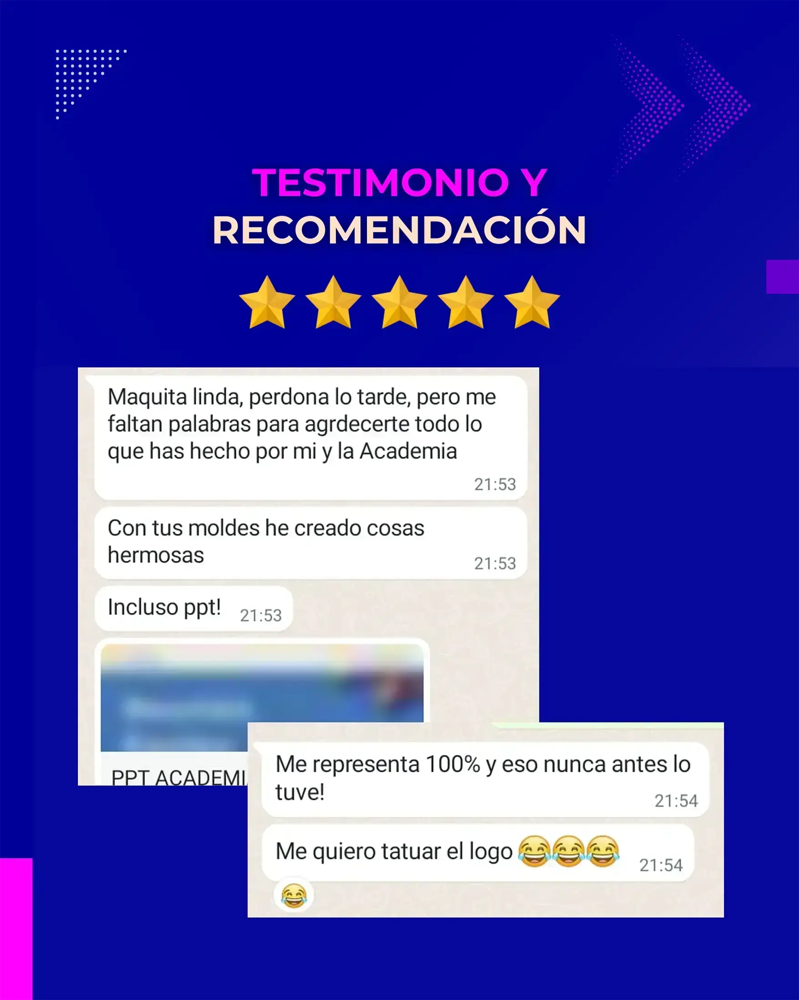

Detalles del proyecto
Herramientas utilizadas
Colaboradores/Stakeholders
Contexto
Doble Espiral Academia tenía una propuesta educativa única — la fusión entre espiritualidad y matemáticas — pero sin identidad visual que la reflejara con coherencia. Cada publicación se veía distinta y la marca no transmitía la solidez que el contenido merecía.
Sandy necesitaba 18 diseños para Instagram, Facebook y YouTube — carruseles, reels y covers — que capturaran esa esencia dual y que ella pudiera editar en Canva de forma autónoma, sin depender de un diseñador para cada publicación.
Desafío
Diseñar un sistema visual que capturara la dualidad de la marca — espiritual y matemática, orgánica y estructurada — y convertirlo en plantillas editables que Sandy pudiera usar con autonomía total. El entregable tenía que ser tan intuitivo que no requiriera instrucciones para cada publicación nueva.
Empresa/Cliente: Doble Espiral Academia
Proceso
Investigación empática: Entrevista abierta con Sandy para explorar valores, sensaciones, referentes visuales y el tipo de audiencia a la que quería llegar. No empecé diseñando — empecé escuchando y buscando lo que no siempre se dice con palabras.
Card sorting de contenidos y formatos: Organicé los tipos de publicación — carruseles educativos, reels, testimonios, covers — según el flujo de consumo de la audiencia, para que cada pieza tuviera un rol claro en el recorrido del seguidor.
A/B testing de propuestas visuales: Desarrollé tres propuestas gráficas distintas y las validé con Sandy en ciclos de feedback estructurado — puliendo colores, tipografías y jerarquías hasta encontrar el lenguaje visual que la representara 100%.
Prototipado en Canva con instrucciones integradas: Diseñé las 18 plantillas con capas nombradas, instrucciones de edición integradas y recomendaciones de uso — para que Sandy pudiera publicar con coherencia sin necesitar asistencia en cada post.
Resultados
+35% de engagement — aumento en interacciones en Instagram y Facebook tras el lanzamiento del nuevo sistema visual.
18 plantillas editables entregadas — carruseles, reels, portadas y covers para Instagram, Facebook y YouTube, organizadas y listas para uso inmediato.
Sistema que Sandy aplica más allá de las redes — las plantillas se extendieron a lápices, libretas y presentaciones. Eso es escalabilidad real.
100% de satisfacción — "Estos diseños me representan 100%! Y eso nunca antes lo tuve!" — Sandy Schumacher, Fundadora y CEO de Doble Espiral Academia.
Rol — Social Media Designer & UX Researcher
Inicié el proyecto con una entrevista abierta que aportó datos emocionales, estéticos y estratégicos — definiendo el tono, el estilo visual y las sensaciones que debía transmitir la marca antes de diseñar una sola pieza.
Usé card sorting para jerarquizar contenidos y formatos, y A/B testing para validar las variantes de color y tipografía que mejor resonaran con Sandy y su audiencia. La observación del proceso reveló puntos críticos de usabilidad que me llevaron a iterar el sistema en tres ciclos de feedback hasta llegar a la versión final.
El entregable fueron 18 plantillas en Canva con estética espiritual, estructura matemática y facilidad de edición — más recomendaciones de uso para asegurar coherencia en todos los canales. Sandy las usa hasta hoy, y las ha aplicado incluso en formatos que no habíamos contemplado al inicio.
Este proyecto confirma algo que aplico en todos mis encargos: el proceso UX no es exclusivo de grandes plataformas. Una academia con propósito bien investigada, bien diseñada y bien documentada genera resultados medibles y una clienta que siente que la marca le pertenece de verdad.
Testimonio
Testimonio espontáneo de Sandy Schumacher, Fundadora y CEO de Doble Espiral Academia.
-

Ago 2024 |Freelancer
Testimonio de Proyecto“Maquita linda, perdona lo tarde, pero me faltan palabras para agradecerte todo lo que has hecho por mí y la Academia. Con tus moldes he creado cosas hermosas, ¡incluso PPT! Me representa 100% y eso nunca antes lo tuve!”
Sandy Schumacher
Fundadora y CEO de Academia Doble Espiral
Ago 2024 · Proyecto freelance.
Rol: Social Media Designer & UX Researcher